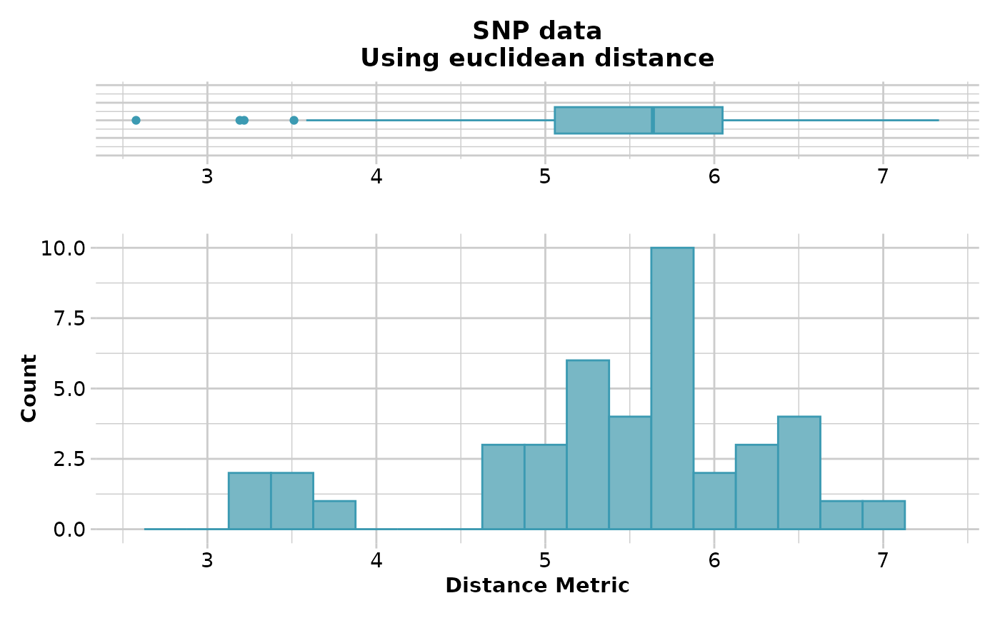

The script plots a heat map to represent the distances in the distance or dissimilarity matrix. This function is a wrapper for heatmap.2 (package gplots).
Arguments
- D
Name of the distance matrix or class fd object [required].
- palette_divergent
A divergent palette for the distance values [default diverging_palette].
- verbose
Verbosity: 0, silent or fatal errors; 1, begin and end; 2, progress log; 3, progress and results summary; 5, full report [default 2 or as specified using gl.set.verbosity]
- ...
Parameters passed to function heatmap.2 (package gplots)
Author
Custodian: Luis Mijangos – Post to https://groups.google.com/d/forum/dartr)
Examples
if (FALSE) { # \dontrun{
gl <- testset.gl[1:10,]
D <- dist(as.matrix(gl),upper=TRUE,diag=TRUE)
gl.plot.heatmap(D)
D2 <- gl.dist.pop(possums.gl)
gl.plot.heatmap(D2)
D3 <- gl.fixed.diff(testset.gl)
gl.plot.heatmap(D3)
} # }
if ((requireNamespace("gplots", quietly = TRUE))) {
D2 <- gl.dist.pop(possums.gl)
gl.plot.heatmap(D2)
}
#> Starting gl.dist.pop
#> Processing genlight object with SNP data
#> Calculating distances: euclidean
#> Refer to the dartR Distance Analysis tutorial for algorithms
#>

#> Returning a stats::dist object
#> Completed: gl.dist.pop
#> Starting gl.plot.heatmap
#>
#> Found more than one class "dist" in cache; using the first, from namespace 'spam'
#> Also defined by ‘BiocGenerics’
#> Found more than one class "dist" in cache; using the first, from namespace 'spam'
#> Also defined by ‘BiocGenerics’
#> Found more than one class "dist" in cache; using the first, from namespace 'spam'
#> Also defined by ‘BiocGenerics’
#> Found more than one class "dist" in cache; using the first, from namespace 'spam'
#> Also defined by ‘BiocGenerics’
#> Processing a distance matrix
#>
 #> Completed: gl.plot.heatmap
#>
#> Completed: gl.plot.heatmap
#>